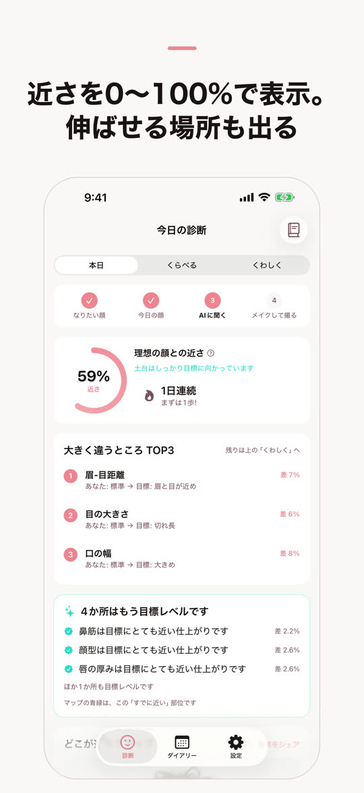
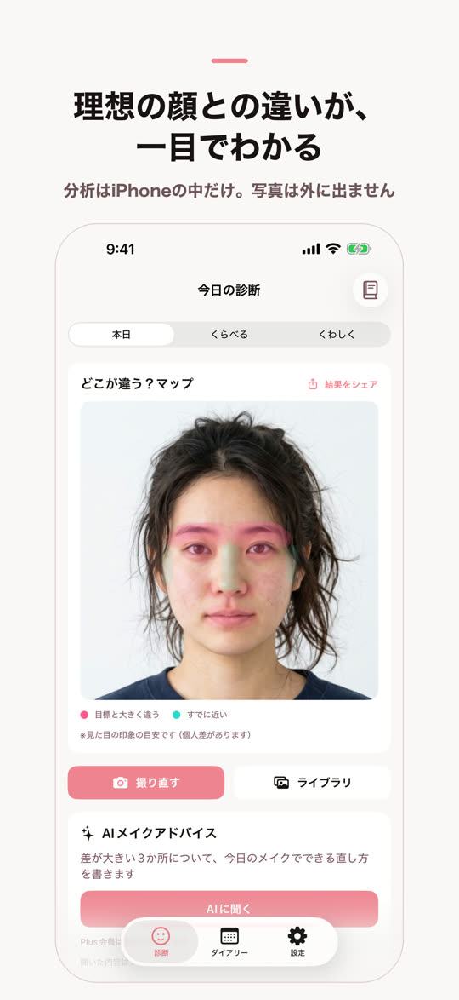
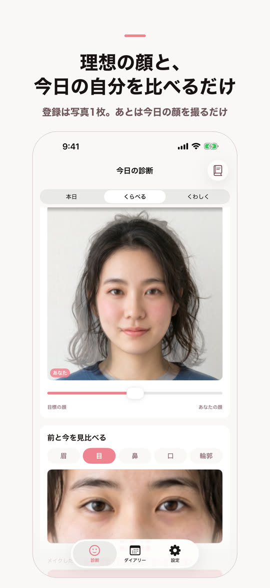

写真2枚を重ねて、どこが何%違うかを出します。顔の分析はiPhoneの中だけで終わり、写真が外へ送られることはありません。
iPhone 対応。アカウント登録は要りません



撮った写真はiPhoneの外へ出ません。
顔の分析は端末の中だけで終わります。「AIに聞く」を押したときに送られるのは、11項目の差の数値と顔タイプの名前だけで、写真は含みません。アカウント登録は要らず、アプリを消せば記録もすべて消えます。
| 診断 | 初めて起動してから7日間は何回でも無料。8日目からは1日2回まで無料 |
|---|---|
| AIメイクアドバイス | 毎月1回まで無料。同じ月にもう一度読むなら1回 120円 |
| ミラメイク Plus | 月 980円 または 年 3,800円。診断が回数の上限なし / アドバイスが回数の上限なし / なりたい顔を5枚まで登録できる / 記録が期限なしで残る |
無料のまま使い続けられます。記録は無料だと7日間残ります。
日本・シンガポール・台湾・香港・米国・インドで配信中